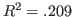

Next: 因子分析 Up: JASPについて Previous: 分散分析（対応なし×対応あり）
ここでは、Data Library にある練習用データを用いて回帰分析を実行してみることにする。
[Open] メニューから [Data Library]
 [4. Regression] と進むと、[Exam Anxiety] というデータセットが見つかる。
[4. Regression] と進むと、[Exam Anxiety] というデータセットが見つかる。
右側のアイコンをダブルクリックして、.csv 形式のファイルを開いてみよう。
次のようなデータが表示される。
これは、生徒103人について学力テストの得点とテスト実施前の質問紙調査の結果からなる仮想データである[2]。
変数の概要は以下の通り。
回帰分析を実行する前に、基本統計量を算出してデータの特徴を把握しておこう。
分析メニューの [Descriptives] から "Revise", "Exam", "Anxiety" の3変数について平均、SD、最小値、最大値等をまとめたものが以下の表である。
| Revise | Exam | Anxiety | |
| Valid | 103 | 103 | 103 |
| Missing | 0 | 0 | 0 |
| Mean | 19.85 | 56.57 | 74.34 |
| Std. Deviation | 18.16 | 25.94 | 17.18 |
| Minimum | 0.000 | 2.000 | 0.05600 |
| Maximum | 98.00 | 100.0 | 97.58 |
また、同じく分析メニューの [Regression]
 [Correlation Matrix] から各変数の得点分布と散布図等を図示したものが次の図である。
[Correlation Matrix] から各変数の得点分布と散布図等を図示したものが次の図である。
"Exam" は "Revise" と正の相関（テスト勉強の時間が長い生徒ほど成績が良い）、 "Anxiety" と負の相関（テスト不安の高い生徒ほど成績が悪い）を示しているが、やや曲線的な相関があることも見て取れる。
また、"Revise" と "Anxiety" のデータはそれぞれ右と左に大きく歪んでいることもわかる。
以上のことに留意しながら、とりあえず "Exam" を従属変数、"Revise" と "Anxiety" を独立変数とした重回帰分析を実行してみることにしよう。
分析メニューの [Regession] から [Linear Regression] を選択する。
次のように回帰分析を実行するメニューが現れる。 最低限行うことは、従属変数と独立変数を指定することである。 これは、左側のボックスに並んだ変数名をクリックし、右側のボックスに移動させることで実行できる。
"Exam" を [Dependent Variable] に、"Revise" と "Anxiety" を [Covariates] に移動させると、右側の画面に回帰分析の結果が即表示される。
これらの結果は、それぞれタイトル部分をクリックし [Copy] を選択することで、クリップボードにコピーできる11。 コピーした部分はMS Word などに（ペースト）し、編集することが可能である。
次の表は、上記の出力を1つにまとめたものである。 APAの指針を参考に、非標準化係数を 、標準化係数を と表記している。
| 要因 | SE | ||||
| 切片 | 87.833 | 17.047 | 5.152 | .001 | |
| 勉強時間 | 0.241 | 0.180 | 0.169 | 1.339 | 0.184 |
| テスト不安 | -0.485 | 0.191 | -0.321 | -2.545 | 0.012 |
| , , | |||||
変数を指定するダイアログの下にあるメニューを開い、追加の分析を行うことができる。
例えば、[Statistics] メニューの [Collinearity diagnostics] にチェックを入れると、独立変数同士の相関が高すぎることによる多重共線性を判定するための指標（VIF: variance inflation factor12）などが算出される。

また、同じメニューの [Part and partial correlations] にチェックを入れると、従属変数と各独立変数の部分相関係数および偏相関係数を算出することができる。 これを2乗したものが、部分決定係数および偏決定係数である。
[Plot] メニューで残差の分布を図示することもできる。 回帰分析では、予測値のどの範囲においても残差は同じ分布に従う13という仮定がおかれており、これが満たされていることが分析結果の妥当性を担保する1つの要件になっている。
例えば、[Residuals vs. predicted] にチェックを入れると、次のようなプロット（残差プロット）が表示される14。
これを見ると、テスト得点 Exam の予測値 [Predicted Values] の小さいところで残差 [Residuals] が大きくばらついている様子がわかる。
最初に示した "Revise" と "Anxiety" の散布図を見ると明らかなように、このデータは「勉強時間が短くかつテスト不安の高い」生徒が非常に多くを占める構成となっている。 一方、テスト得点は勉強時間と正の、テスト不安と負の相関をしていることからテスト得点が低いと予測される生徒ばかりが発生することになり、このような大きなばらつきを発生させる原因になっていると考えられる。 それに加えて、"Exam" と "Anxiety" の相関が曲線的であることもこのような現象を生み出す要因となっているだろう。
分析結果は、[File] タブから保存することができる。
左側メニューの [Export Results] から [Computer] を選択すれば、分析結果をまとめて .html 形式でPC上に保存できる。
データと分析結果をまとめて保存することもできる。
左側メニューの [Save As] から [Computer] を選択すれば、分析に用いたデータとJASPでの分析結果がまとめて .jasp 形式のファイルでPC上に保存される。 これを [Open] から開けば、データとそれを用いた分析結果をまとめて [Common] タブに表示させることができる。
分析結果を保存しない場合は、[File] から一番下の [Close] を選択し、[Save Workplace?] と聞かれるダイアログで [Discard] を選択すればよい。
Taichi Okumura